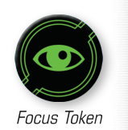

FOCUS ()

Pilots can focus to concentrate and expand their combat prowess. When a ship performs the action, it gains one focus token.
A ship is focused while it has at least one focus token. Focus tokens are circular, green tokens. A focused ship follows these rules:
-
While a focused ship performs an attack, during the Modify Attack Dice step, it may spend a focus token to change all of its results to results.
-
While a focused ship defends, during the Modify Defense Dice step, it may spend a focus token to change all of its results to results.
Additionally:
-
A ship cannot spend a focus token to change results to or results if it does not have any results.
-
If an ability instructs a ship to gain a focus token, this is different than performing a action. A ship that gains a token without performing the action can still perform the action this round.